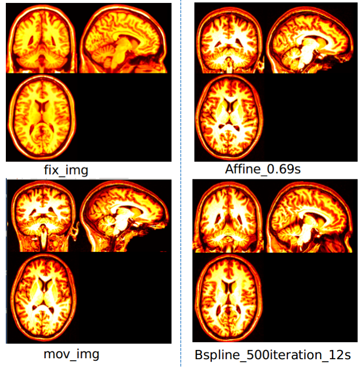

相关项目
 |
|  |
专业技能
编程语言: 熟练使用Python，熟悉C/C++，熟悉Linux开发环境。
操作系统: 熟悉Linux, Windows开发环境
开发框架: 熟练使用Pytorch，Keras，Tensorflow，了解FastAI，MXNet。熟练使用Git，SSH等工具。
开发工具: 熟练使用Numpy，Pandas，Scikit-Learn，Skimage，CV2，SimpleITK等开发工具。
英语等级: CET-6，无障碍阅读计算机视觉领域英文文献。